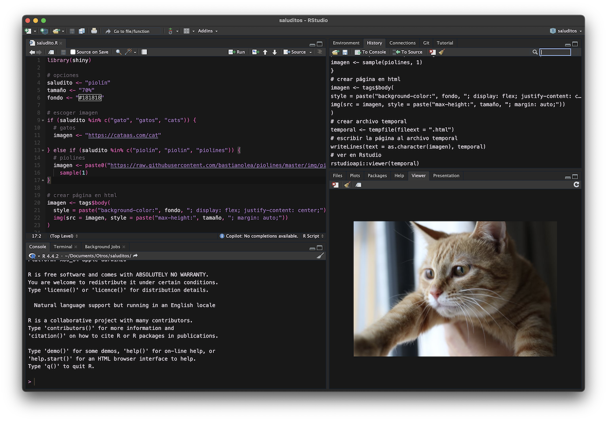

Recibe gatos o bendiciones automáticamente al abrir RStudio
27/11/2025
Luego de hacer el post de hacer que RStudio haga cosas al abrirse, se me ocurrió la idea de hacer que muestre imágenes divertidas al azar.
Así que hice un pequeño script que muestra fotos al azar de gatos desde la API Cats As A Service, o bien imágenes de bendiciones de Piolín que busqué en internet 💕
Las fotos aparecen al azar al abrir RStudio en el panel Viewer:
Para lograrlo, hay que editar el
archivo .RProfile, que es un script de R que se ejecuta automáticamente al abrirlo.
Para editar el .RProfile, ejecuta:
usethis::edit_r_profile()
Se abrirá un script, y dentro debes pegar lo siguiente:
setHook("rstudio.sessionInit", function(newSession) {
if (newSession) {
# opciones
saludito = "gatos" # gatos o piolín
tamaño = "70%"
fondo = "#181818"
# escoger imagen
if (saludito == "gatos") {
imagen <- "https://cataas.com/cat"
} else if (saludito == "piolín") {
imagen <- paste0("https://raw.githubusercontent.com/bastianolea/piolines/master/img/piolin_", 1:20, ".jpg") |> sample(1)
}
# crear página en html
library(shiny)
imagen <- tags$body(
style = paste("background-color:", fondo, "; display: flex; justify-content: center;"),
img(src = imagen, style = paste("max-height:", tamaño, "; margin: auto;")))
temporal <- tempfile(fileext = ".html") # crear archivo temporal
writeLines(text = as.character(imagen), temporal) # guardar la página al archivo temporal
rstudioapi::viewer(temporal) # ver archivo temporal en Rstudio
rm(temporal, imagen, fondo, tamaño, saludito) # limpieza
}
}, action = "append")
Ahora si cierras y vuelves a abrir RStudio aparecerá una foto al azar!
En la línea donde se define saludito puedes elegir entre "gatos" o "piolín" para elegir qué tipo de imagen quieres que aparezca al abrir RStudio! ✨

Originalmente, cuando estaba probando la idea, hice que solo se mostrara una imagen en el panel Viewer, pero salía con fondo blanco. Entonces hice que la imagen tuviera un fondo oscuro usando {magick} (nunca lo había usado), que permite editar imágenes desde R. Lo que hice fue crear una imagen negra del mismo tamaño que el panel Viewer de RStudio (lo que se puede obtener con la función dev.size("px"), y sobre esa imagen ponía una de las imágenes al azar, reescaladas y al centro, y mostraba eso. Pero después se me ocurrió que era mucho mejor mostrar un HTML con fondo negro y la foto centrada.
El código de lo que intenté con ImageMagick queda aquí para la posteridad:
# install.packages("magick")
library(magick)
fondo = "#181818" # color del fondo
porcentaje = 0.4 # tamaño de la imagen
# obtener un gatito
gatito <- "https://cataas.com/cat"
# obtener tamaño del panel
tamaño <- dev.size("px")/2
# achicar imagen
imagen <- image_read(gatito) |> image_resize(tamaño*porcentaje)
# crear fondo
fondo <- image_blank(width = tamaño[1], height = tamaño[2], color = fondo)
# unir imagen y fondo
salida <- image_composite(fondo, imagen, gravity = "center")
print(salida, info = FALSE)
Igual es interesante saber que se puede mostrar cualquier contenido en HTML en el panel Viewer con el siguiente código:
# código html
contenido <- tags$body(
style = "background-color: #181818; display: flex; justify-content: center;",
p("Hola", style = "color: #DDD5DE; font-size: 48px; font-family: 'Arial';")
)
# crear archivo temporal
temporal <- tempfile(fileext = ".html")
# escribir la página al archivo temporal
writeLines(text = as.character(contenido), temporal)
# ver en Rstudio
rstudioapi::viewer(temporal)